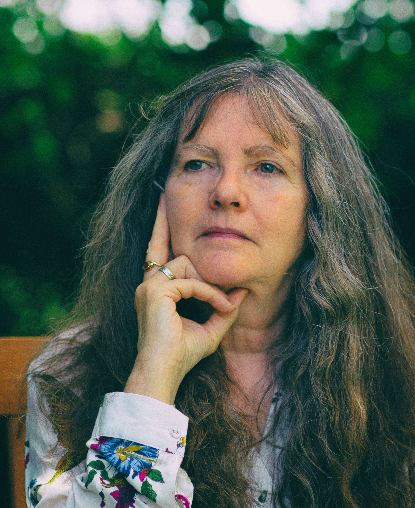

Susan Jesudason
Director, Author and Consultant

Susan Jesudason
Director, Author and Consultant
A graduate of La Trobe University in Australia and Victoria University in New Zealand, Susan has teaching qualifications from New Zealand and the UK.
As a Head of Humanities she created and implemented an integrated MYP humanities programme, and as an IBDP Co-ordinator she devised and implemented a full DP programme in the UWC. Her subjects include Religious Studies A Level, and Philosophy and Theory of Knowledge in the IB Diploma.
As an experienced university admissions counsellor she has established university advice departments in several schools and helped hundreds of students to find optimal university courses.
Her books on the IB Diploma Theory of Knowledge for Cambridge University Press, Decoding Theory of Knowledge, and Theory of Knowledge have been very successful, the latter a new edition of the classic ToK CUP text by Richard van de Lagemaat for the new ToK course.
Married, with two sons, a daughter, four grandchildren, a lively border collie and a perfectly-behaved German shepherd, Susan sees education as a key contributor to human progress and the establishment of aspirations that are humane, open-minded and sustainable.
"I have been a passionate dog-owner and trainer all my life, and one of the things I have learned from that is that the principles involved in getting co-operation from dogs are very similar to those required to inspire co-operative learning in students. Finding what young adults naturally want to do and then emphasising and reinforcing it is a far better approach to teaching and learning than trying to force them through some method of carrot and stick. Teaching is largely a matter of admitting that you are as much a learner as your students and creating an atmosphere in the classroom—and outside it—where everyone learns and everyone teaches."